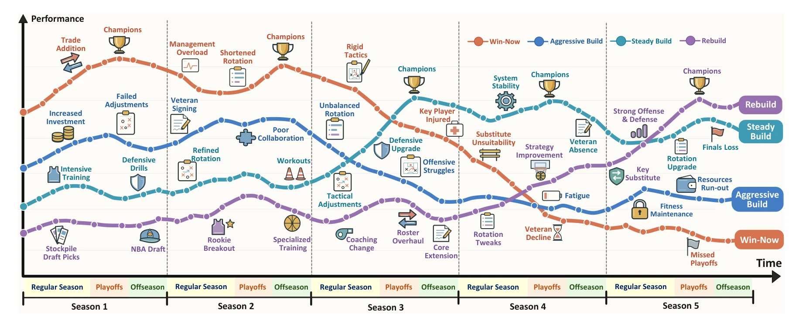
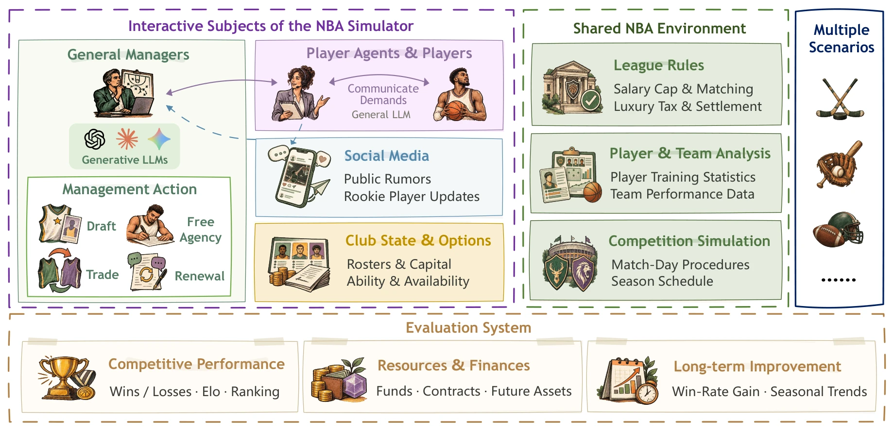
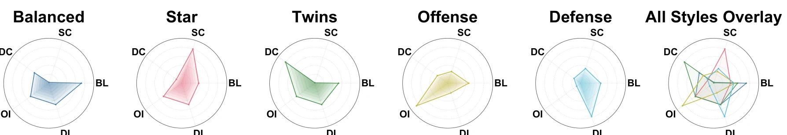

Abstract
Highlights
🏀 Long-horizon management as a task. Each LLM is a team general manager over five seasons; trades, signings and renewals made now shape payroll, assets and options for every later season.
💰 Real resource constraints. Salary cap and matching, luxury tax, and a cash balance updated by revenue, operating expenses and tax, carried forward across seasons.
🗣️ Multi-role interaction. LLM GMs negotiate with each other and with players and agents, who share a general LLM to express demands, trade requests and public rumors.
🏒 One task, four sports. The same management loop runs on NBA, NFL, NHL and MLB simulators, so strategies can be compared under different rules and roster needs.
⚖️ Fair starting points. Five roster types (Balanced, Star, Twins, Offense, Defense) built from real-world player ratings, with comparable initial strength but different needs.
📈 Three-way evaluation. Mean season-end Elo, terminal cash, and cross-season win-rate improvement $G_i$, together with action logs and trading diagnostics.
Task Definition
Each evaluated LLM serves as a team GM. Its objective is to improve competitive performance across seasons by balancing current roster investment with future resource needs. We model the task as a partially observable stochastic game
$$\mathcal{G} = (\mathcal{I}, \mathcal{S}, \mathcal{A}, P, O, \mathbf{U}, H),$$where $\mathcal{I}$ is the team set, $\mathcal{S}$ comprises roster, contract, financial and market states, $\mathcal{A}$ is the joint GM action space, $P$ governs transitions, $O$ determines information visibility, $\mathbf{U}$ represents management outcomes, and $H$ is the decision horizon across seasons. Model $m_i$ for team $i$ acts on its observation and history while the environment advances under the joint action:
$$a_t^i \sim \pi_{m_i}(\cdot \mid o_t^i, h_t^i), \qquad s_{t+1} \sim P(\cdot \mid s_t, \mathbf{a}_t).$$Changes caused by actions persist and enter subsequent observations according to disclosure rules, so the task combines repeated decisions, state dependencies across phases, and delayed feedback.
Benchmark Overview

🧑💼 General Managers (evaluated)
Four action types: drafting rookies, signing free agents, trading players and picks with other GMs, and renewing contracts after each season.
🗣️ Players & Agents (NPCs)
Players express preferences over prospects, roles and pay; agents generate trade requests and public rumors that become market signals.
🏟️ System Environment
Validates actions, simulates games, settles revenue and expenses, enforces cap and tax rules, and opens draft, signing and renewal windows.
The NBA environment has three shared modules: League Rules (salary cap & matching, luxury tax & settlement), Player & Team Analysis (training statistics, team performance data), and Competition Simulation (match-day procedures, season schedule).
Roster Types
For each sport, five roster types are constructed from real-world player ratings with comparable initial strength but distinct needs for bench depth, support for core players, and offensive or defensive improvement.

Evaluation Metrics
Competitive performance. All $N$ teams start each season at $R_0 = 1500$ with no carry-over. For each rated game, ratings update with $K = 20$:
$$p_{i,s,g} = \frac{1}{1 + 10^{(R_{j,s}^{(g-1)} - R_{i,s}^{(g-1)})/400}}, \qquad R_{k,s}^{(g)} = R_{k,s}^{(g-1)} + K\big(y_{k,s,g} - p_{k,s,g}\big).$$We report the mean season-end Elo $\overline{E}_i = \frac{1}{T}\sum_{s=1}^{T} E_{i,s}$, plus regular-season records and rank.
Resources and finances. Terminal cash $C_i$ is the balance after revenue and expenses are settled at the end of the horizon, reflecting capacity for further investment.
Long-term improvement. The difference between mean regular-season win rates in the final and initial $w$ seasons:
$$G_i = \frac{1}{w}\sum_{s=T-w+1}^{T} v_{i,s} - \frac{1}{w}\sum_{s=1}^{w} v_{i,s}, \qquad v_{i,s} = \frac{W_{i,s}}{W_{i,s}+L_{i,s}}.$$Leaderboard
Each entry is one full five-season run (2022–2026). Click a column header to sort. The rule-based Native GM strategy baseline is highlighted.
Key Findings
🏆 Wide divergence from equal starts. In the NBA, Elo spans 1071.0 to 1977.3. Claude Opus 5.5 ranks first and wins three of five championships; Opus, GPT-6 Astra and Claude Sonnet 5.5 collectively win all five titles.
💵 Different investment styles. Claude GMs actively trade for contention, while GPT-6 GMs favor cautious acquisitions: Astra and Sol finish with 1006.62 and 1152.33 in cash versus 312.48 for Opus.
📉 Peaks are not sustained improvement. Sonnet peaks at 75 wins in 2024 and wins a title, then falls to 65 and 56 after unaffordable renewals cost it valuable players. Sol climbs steadily from 45 to 71 wins.
🧮 Cash alone is not success. MiMo-V2.6-Pro retains 925.41 in cash but ranks 23rd as its wins fall from 40 to 22; deficits appear at very different competitive levels.
🧭 Many LLMs trail a rule-based GM. The Native GM baseline ranks 14th in the NBA; 16 LLMs finish below it.
🌐 Leadership transfers across sports. The six leading NBA models stay in the top seven in every other sport. Opus leads American football and ice hockey; GPT-6 Astra leads baseball, where Opus ranks second but ends with negative cash.
Citation
@misc{zhou2026gmleaguearena,
title={GM League Arena: An Interactive Long-Horizon Task Benchmark Based on Professional Sports League Management},
author={Junkai Zhou and Ziming Pan and Zhaoyi Zhang},
year={2026},
eprint={2611.05147},
archivePrefix={arXiv},
primaryClass={cs.CL},
url={https://arxiv.org/abs/2611.05147},
}